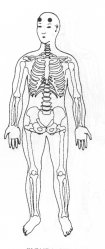
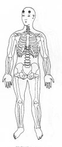

TSE 20
Colocar a mão sobre a parte superior da sobrancelha correspondente na testa TSE 20.
ou
M.e. no braço direito parte superior TSE 19 alta; ®
M.d. na coxa esquerda parte interna TSE 1 alta, ®

Trava de Segurança da Energia 20 - Terceira Profundidade.
|

|
TSE 20 Colocar a mão sobre a parte superior da sobrancelha correspondente na testa TSE 20. ou
M.e. no braço direito parte superior TSE 19 alta; ®
M.d. na coxa esquerda parte interna TSE 1 alta, ® |
|